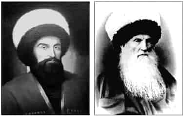
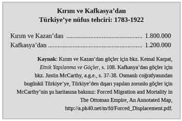
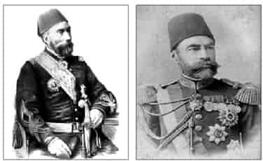
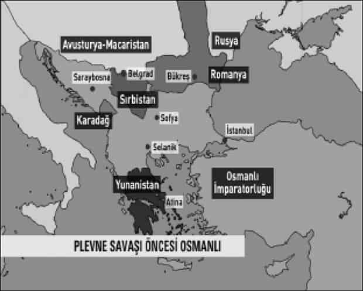
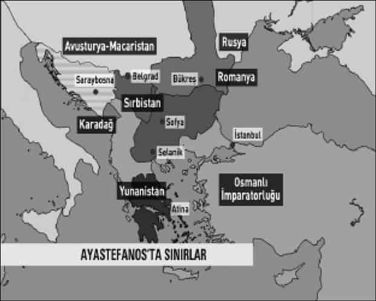
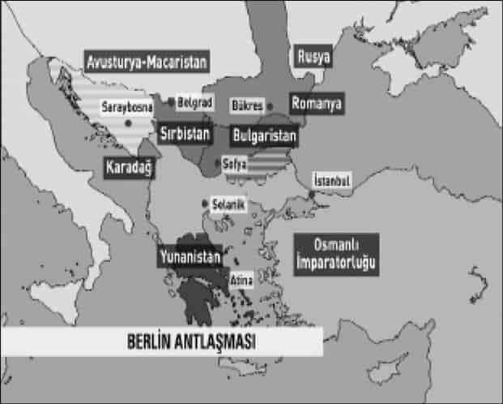
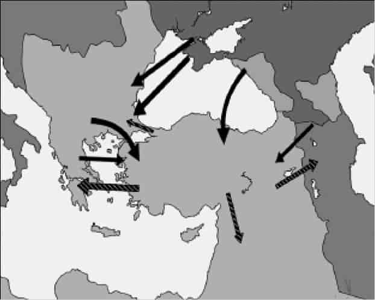

1

Tarihimizde üç facia
Nüfusumuzun yaklaşık yarısının Kafkasya, Kırım ve Balkanlar’dan göçüp geldiğini biliyor muydunuz? Cumhuriyet’in kuruluşuna kadarki 150 yıl içinde Kafkasya, Kırım ve Balkanlar’dan 5 milyon Müslüman Türkiye’ye sürüldü, tehcir edildi veya mübadeleyle Anadolu’ya geldi. Buna karşılık 1 milyon 900 bin Hıristiyan da göçle, tehcir ve mübadeleyle Anadolu’dan ayrıldı.
Ulus-devletler bu süreçlerin sonucu olarak kuruldu.
Roma’dan Osmanlı’ya tarihteki çokuluslu imparatorluklarda etnik temizlik, tehcir, homojenleştirme gibi politikalar yoktu, klasik imparatorluklar böyle bir ihtiyaç da hissetmemişti. Ama modern çağ etnik temizlik ve tehcirlerle doludur. Neden acaba?
Şükrü Hanioğlu: Burada en önemli etki milliyetçilik. Roma İmparatorluğu’nun olduğu çağda milliyetçilik yok. Ortaçağ’da da milliyetçilik yok. Ama Balkan Savaşı’nın yaşandığı çağda ya da 19. yüzyılda, daha doğrusu Fransız İhtilali’nin sonrasında milliyetçilik var ve savaşlar da artık sadece böyle bir yeri almak veya vermek değil, milliyetçilik emellerini gerçekleştirmek için yapılıyor. Bunun sonucunda da çok acı gelişmeler savaşlardan sonra ortaya çıkıyor: Dediğiniz gibi, tehcirler, belli nüfusu göçe zorlamalar, katliamlar... Bu anlamda tabii milliyetçilik sonrası savaşlar kanlı savaşlar.
Bir de tabii şunu unutmamak lazım, savaşlarda cephe kavramı değişiyor; çok daha geniş, sivilleri de içine alan bir cephe anlayışı... Zaten Alman Von der Goltz’un “millet-i müsellaha” [silahlı millet] fikrini geliştirmesi de bundan kaynaklanıyor. Dolayısıyla sivillerin de çok fazla etkilendiği bir hale geliyor savaş. Halbuki eskiden savaş olduğu zaman, cephe gerisinde insanlar günlük hayatlarını şehirlerde, köylerde yaşıyor, cephede ordular savaşıyordu, bu da değişmiş durumda. Tabii Balkan Harbi de bunun en acı örneklerinden bir tanesi.
Modern çağda Avrupa’da Çarlık Rusyası coğrafyasında uygulanan nüfusu homojenleştirme politikalarından en büyük zararı Osmanlı Müslümanları, tabii özellikle Türkler gördü. Çünkü imparatorlukta geniş bir coğrafyaya yayılmışlardı. Hıristiyan ulus-devletler kuruldukça katliamlarla yok edildiler, kitleler halinde Anadolu’ya tehcir edildiler. Kırım’dan, Kafkasya’dan, Balkanlar’dan Anadolu’ya zorla göç ettirildiler.
11 milyon km2’lik Osmanlı imparatorluk coğrafyasının iki yüzyıl içinde Kafkasya’dan, Kırım’dan, Tuna ve Balkanlar’dan 777 bin km2’ye çekilmesi, sadece toprak kaybı değildir. Asıl feci olan insani tarafıdır; katliamlardır, tehcir ve göçlerdir, savaşlarda nesillerin kırılmasıdır.
Üç büyük felaket
Osmanlı tarihinde, üç büyük felaket vardır ki, Türkiye Cumhuriyeti’nin kuruluşunu ciddi surette etkilemiştir:
● Biri, şanlı Plevne Savunması’yla hatırlayacağımız 1877-78 Rus Savaşı’nda Tuna vilayetinin kaybedilmesidir. Tuna vilayetindeki Türkler, Müslümanlar katliam ve tehcire maruz kalmış, halen Osmanlıların elinde bulunan Rumeli’ye, İstanbul’a ve Anadolu’ya sığınmışlardı.
● İkinci felaket 1912 Balkan Savaşı’dır. Peş peşe mağlubiyetlerle ordu Çatalca’ya kadar çekilmiştir. Adriyatik kıyılarından Çatalca’ya kadar bütün Avrupa-i Osmani, bütün Rumeli kaybedilmiş, Yanya, İşkodra, Priştina, Manastır, Selanik, Kavala, Yeni Pazar, Sancak, Serez, Kırcaali gibi bugün bile birçoğumuzun hatırladığı Osmanlı şehirleri bu felakette elden gitmişti. Toprak kaybından daha önemlisi, bunun yol açtığı katliam ve tehcir olaylarıdır. Rumeli kana bulanmış, yüz binlerce insan, kadın ve çocuklar dahil, aç ve perişan İstanbul yollarına düşmüştü. Birçoğu Anadolu’ya yerleştirilecekti.
● Üçüncü büyük felaket, Birinci Dünya Savaşı’dır. Bütün insanlık için büyük bir felaket olan Birinci Dünya Savaşı, Anadolu için bilhassa felakettir, faciadır.
Tarihçiler, 1912 Balkan Savaşı’nı, Birinci Dünya Savaşı’nın provası veya giriş bölümü olarak tanımlıyor.1 On yıl içinde Balkan Savaşı, Birinci Dünya Savaşı ve Milli Kurtuluş Savaşı... 1912-1922 arasındaki on yılda, Anadolu’da yaklaşık 3 milyon Müslüman, tabii büyük çoğunluğu Türk hayatını kaybetti, Çanakkale’de, Sarıkamış’ta, diğer cephelerde ve cephe gerisinde salgın hastalıktan, açlıktan...
Bu dönemde yaklaşık 600 bin Ermeni, 300 bin Rum aynı şekilde hayatını kaybetti.
Nasıl felaketlerin içinden çıkıp geldik, bir düşünmek gerekmez mi?
Bunları bilmeliyiz. Ne için bilmeliyiz? Son sığınağımızın Türkiye olduğunun bilincine varmak için... Tarihten ders almak için... Savaşlara karşı çıkmak için... Etnik ve ulusal husumetlere kapılmamak için...
Tarihin tekerrüründen sakınmak için...
2012 yılı 1912 Balkan Savaşı’nın 100. yıldönümüdür... Bütün Balkan ülkelerinde ve Türkiye’de savaşı anmak ve bilgileri tazelemek için etkinlikler düzenlendi. Balkan Harbi bilhassa Türkiye için önemlidir. 1877-78 Rus Harbi (93 Harbi) felaketiyle Birinci Dünya Savaşı felaketi arasındaki zincirin halkasıdır çünkü.
Kırım Tatarları
Geniş coğrafyadan Anadolu’ya doğru göçler ilk Kırım’dan oldu. Bunu Kafkasya ve Rumeli’den yapılan tehcirler, kitlesel sürgünler izledi. Osmanlı ordusu mağlup olup nereden çekildiyse oradan göç ve tehcir başladı. Tarihçi İsmail Hakkı Uzunçarşılı’ya göre, kaybedilen topraklardan Anadolu’ya tarihte ilk göç 1777 yılında Kırım’dan oldu. 8 Temmuz 1777’de Kırım’da Ur Savaşı’nın kaybedilmesi üzerine Ruslar Kırım topraklarına girmiş, Kırım Hanı III. Selim Giray Han ailesi ve maiyetiyle birlikte bir gemiyle İstanbul’a yelken açmıştı.
Rusların Kırım’a girmesi ve Kırım hanının İstanbul’a kaçması dehşetli karışıklığa sebep oldu. Zengin fakir herkes sahile döküldü; buldukları deniz vasıtasıyla Anadolu sahillerine kaçmaya başladılar.2
Mağlubiyetler devam ettikçe Kırım’dan Osmanlı topraklarına, özellikle bugün Romanya’da bulunan Dobruca’ya büyük göçler devam etti. Göçlerle birlikte katliam ve ölümler yaşandı. Kırım Tatarlarının, Türklerinin tarihi katliam ve göç tarihidir.
Şükrü Hanioğlu: Bunun tabii en son aşaması Stalin’in Almanlarla işbirliği yaptıkları gerekçesiyle bütün Tatarları Orta Asya’ya sürmesiyle sonuçlanacak bir göç. Kırım’ın Osmanlı’da zaten belli bir otonomisi de vardı. Kırım hiçbir zaman tam Osmanlı kontrolünde değildi ama Osmanlı’yla olan bağlantısının kesilmesi ve ardından tamamen Rus kontrolüne girmesi sonrasında, birçok bölgede olduğu gibi Kırım’da da Müslümanlar diğer bölgelere göç etmeye başladılar. Burada tabii bir sorun var, Müslümanların bir örgütlenme sorunu var. Devletin olmadığı yerde Müslümanlar kalmak istemiyor, yani bayrak indiğinde Müslüman da bayrağın olduğu yere gitmek istiyor. Çünkü Müslümanların Rum kiliseleri gibi bir kiliseleri yok arkalarında, bir örgütleri yok. Tabii bunları da kurmaları çok zor oluyor. Yani bakın, mesela Osmanlı’nın çekilmesinden sonra cemiyetler kurmaları, teşkilatlanmaları çok uzun bir süre alıyor. Zaten bu olana kadar çok büyük bir kütle Osmanlı devletine göç ediyor. Burada temel sorun aslında Müslümanların temel örgütünün devlet olması, devlet bir yerden çekildiği zaman onların da devletin gittiği yere gitme ihtiyacı hissetmeleri.
Kırım Türkleri ya doğrudan İstanbul ve Anadolu’ya veya o zaman Osmanlı toprağı olan Dobruca’ya (Romanya) veya Tuna vilayetine (Bulgaristan) tehcir edildiler ya da göçtüler. Büyük bir Tatar nüfusun teşekkül ettiği Dobruca’da Sultan Abdülmecid adına Tatarlardan oluşan Mecidiye şehri resmen fermanla kuruldu. 1877 yılında Dobruca’nın nüfusu 226 bindi, bunun 129 bini Müslüman’dı: Kırım ya da Osmanlı Türk’ü ve Çerkez’di. Mecidiye kentinin nüfusu 21 bindi, bunun 12 bini Kırım, 8.500’ü Osmanlı Türk’ü, 500’ü Çerkez’di. Kalanlar Bulgar, Rus, Rumen ve 200 kadar da Alman’dı.3
Balkanlar’ın kaybıyla Dobruca’dan ve Bulgaristan’dan yine Türkiye’ye çeşitli dönemlerde büyük göçler oldu. Türkiye’ye gelenlerin bir kısmı Anadolu kırsalına yerleşti, diğerleri ise İstanbul, İzmir, Bandırma, İnegöl, Eskişehir gibi şehir ve kasabalara yerleştiler. Eskişehir ve Ankara arasındaki bölgede Tatarların iskân edildiği çok sayıda köy bulunmaktadır. Orta Anadolu’nun önemli bir ticaret merkezi olan Eskişehir’de Kırım Türkleri nüfusun büyük bir yüzdesini oluşturmaktadır.4
Kafkasya’da Ruslaştırma

Kafkas kartalı Şeyh Şamil, doğumu Dağıstan Gimri köyü 1797; vefatı Medine 1871.
Osmanlı, Kırım’ın ardından Kafkasya’yı kaybetti. Kafkas halklarının ve bütün Osmanlı Müslümanlarının büyük kahramanı Dağıstanlı Şeyh Şamil, Kafkasya’da güçlü olan tarikat bağlarını harekete geçirdi; Çerkezleri, Çeçenleri ve Dağıstanlıları örgütleyerek, Çarlık ordularına 1834 yılından 1859 yılına kadar 25 yıl süreyle kahramanca direndi. Sonunda Vedeno Kalesi’nde birkaç yüz kahramanla son direnişi yaptı, kaleyi kuşatan Çarlık ordusuna teslim olmak zorunda kaldı. Simsiyah saçlarıyla başladığı savaşını, ak saçlı bir kahraman olarak noktaladı.
Tarihçi Kemal Karpat’a göre Çarlık Rusyası, fethettiği ülkelerde Müslümanlara “zorunlu tahliye” yani tehcir politikasını uygulamaya başladı.5 Tarihçi Justin McCarthy’nin belirttiği gibi, amaç, Kırım ve Kafkasya’da Müslüman varlığını eriterek buraları Rus İmparatorluğu’na sadık Hıristiyan ülkesi haline getirmekti.6 Kırım Tatarlarının ardından Kafkasya’nın Müslüman halkları katliamlara uğradılar, dağıtıldılar, göçe zorlandılar. Osmanlı topraklarına kitleler halinde göçler hızlandı.
Kalanların birçoğu Rusya içine dağıtıldı.
Rus Çarı II. Alexandr, 1861 yılında Kafkasya’yı ziyaret ettiğinde, kendisiyle görüşen ve el konulmuş arazilerin iade edilmesini isteyen Çerkezlere şu karşılığı vermişti:
Ya gösterilecek yerlere veya Türkiye’ye göçünüz!7
Kafkas Müslümanlarının bir kısmı gemilere doldurulup Osmanlı limanlarına gönderildi. Bir kısmı karayoluyla, tabii tren ve otobüsle değil, at arabasıyla, kağnıyla ve yaya olarak!.. Yollara düşen Çerkezler, Çeçenler, Dağıstanlılar, Abhazlar katliamlara maruz kaldılar, açlıktan, soğuktan kırıldılar, kalanlar Anadolu’ya ulaştı. İleride patlak verecek Ermeni meselesinin kökleri bu olaylara kadar uzanmaktadır.
Şükrü Hanioğlu: Burada da büyük çapta Rusların gelişinden sonra, Osmanlı İmparatorluğu’na bizim tek ad altında Çerkez diye ifade ettiğimiz, ama çok değişik Kafkas kavimlerinin göçü var. Hatta bu öyle bir noktaya varıyor ki; bunu örgütleyebilecek kurum kurmak zorunda kalıyor Osmanlı Devleti. Bunları organize etmeye çalışıyor. Tabii çok büyük bir nüfus geliyor, çok büyük Çerkez nüfusu geliyor. Bunlar imparatorluğun değişik bölgelerine mesela Suriye, Ürdün gibi ya da Bulgaristan gibi yerlere yerleştiriliyor ama buna çok itiraz olunca, özellikle 1876 Bulgar Krizi sonrasında, göç edenlerin bazıları imparatorluğun tekrar Asya topraklarına getiriliyor. Çok büyük bir nüfus, imparatorluğun değişik bölgelerine, Doğu Anadolu’ya yerleştiriliyor.
19. yüzyıldaki nüfusların ve kimliklerin altüst oluşu, 20. yüzyıldaki savaşları hazırladı. Müslüman Çerkezlerin çilesi göçmekle bitmemiştir. Yoğun olarak yerleştirildikleri yerlerde, özellikle Bulgaristan’da, yani Osmanlı’nın Tuna vilayetinde tepkiyle karşılaştılar. Etnik ve dinsel kimlik gerilimi burada daha 1800’lü yıllarda artmaya başladı.
Şükrü Hanioğlu: Kendi topraklarından çok uzak yerlerde, dediğim gibi, Ürdün, Bulgaristan gibi yerlerde bu gruplar iskân ediliyor. Bunların iskânında kullanılan birtakım politikalar, yani Müslümanların Balkanlar’a ve diğer yerlere özellikle Hıristiyanların olduğu bölgelere iskân ettirilmeleri, oradaki milliyetçilik hareketlerine bir ivme kazandırıyor. Mesela Bulgar milliyetçiliğini inceleyen tarihçilerin bir kısmı diyorlar ki; aslında Bulgar milliyetçilerin çıkardığı dergilerden çok, bu Çerkez iskânları Bulgar milliyetçiliğini tetikledi. Çünkü ahali belli bir süre bu yeni yerleştirilen, iskân ettirilen Müslümanlara yani Çerkez göçmenlere katkı yapmak için gönüllü olarak çalıştırılıyordu. Tabii gönüllü olmuyordu bu hiçbir zaman. Ürünlerin belli bir kısmını bu göçmenlere vermek zorunda bırakılıyorlardı ve bu sonunda Bulgar milliyetçiliğini de tetikledi.
“Avrupa-i Osmani” denilen Osmanlı’nın Avrupa topraklarında Müslümanlar azınlıkta, Hıristiyanlar çoğunluktaydı. 1820’li yıllarda Osmanlı Avrupası’nda Müslüman nüfus yüzde 32 kadardı, 1890’lı yıllarda bu oran yüzde 47’ye çıkmıştır. Bu artışın iki temel sebebi vardır: Kırım ve Kafkas göçmenlerinden önemli bir bölümünün Osmanlı’nın elinde kalan bu Balkan topraklarına yerleştirilmesi ve Hıristiyanların daha çok nüfusa sahip olduğu toprakların İmparatorluktan ayrılması.8
İmparatorluğun uzak toprakları kaybedildikçe oradaki Müslüman nüfus, yakındaki Osmanlı Balkan topraklarına göçüyor, Kırım ve Kafkasya’dan gelen göçmenlerin de önemli bir kısmı buralara yerleştiriliyor, bu şekilde Müslüman nüfus oranı artıyordu. Müslüman nüfus oranındaki artış, Hıristiyan toplumlarda tepki ve dolayısıyla milliyetçilik duygularına yol açıyordu.
Tuna ve Balkan vilayetlerine geçmeden önce Kırım ve Kafkasya’da yapılan katliam, ölüm ve tehcir yani zorla göç ettirme tablosuna toplu olarak bakalım.

Sadece tehcirler değil, katliam ve ölümler de yaşandı. Kafkasya’da yurtlarından çıkarılanların 400 bini öldürüldü; yollarda eşkıya saldırısından, açlıktan, hastalıktan öldüler.
Kemal Karpat 1859-1914 yılları arasında 2.5 milyon Müslüman’ın Kafkasya’dan Türkiye’ye tehcir edildiğini veya göçtüğünü, bunun yarım milyonunun yollarda öldüğünü tahmin ediyor. Rusya, Müslümanları sürüp çıkardığı bu topraklara Rusları ve Slavları yerleştirerek Ruslaştırma politikası izliyordu.9
Nüfusun homojenleştirilmesi, devlete dinen ve etnik olarak sadakat duymayacağı düşünülen nüfus gruplarının yerlerinden edilerek sayılarının önemsizleştirilmesi 19. yüzyıla ve 20. yüzyılın ilk çeyreğine damgasını vurmuş bir dünya gerçeğidir, maalesef.
Nazilerin Yahudi soykırımı dahil, 20. yüzyılda yaşanacak olan soykırımların öncüsü, Rusya’nın Kırım ve Kafkasya’da yaptığı tehcir ve katliamlardır.
Tarihçi Mujeeb E. Khan’ın isabetle belirttiği gibi, Avrupa’daki modern etnik temizlik ve soykırımlar bilhassa Çarlık Rusyası tarafından başlatıldı. Rusya’nın Karadeniz havzasındaki Osmanlı topraklarını sadece zapt etmesiyle değil, Avrupa’daki “yabancı”lar olarak gördüğü Osmanlı Müslüman nüfusunu tehcir ve yok etmesiyle başlatıldı. O zaman Avrupalı Hıristiyan devletlerin ses çıkarmayıp göz yummasıyla gerçekleşen bu trajik hadiseler, Avrupa’daki modern etnik temizlik ve soykırımların köklerini araştıran birçok Avrupalı yorumcu ve akademisyen tarafından da görülmemeye devam ediyor.10
Tuna vilayeti: 1877-1878
Osmanlı’nın Balkanlar’dan çekilmesi sırasında daha büyük facialar yaşandı. Evvela Osmanlı Balkanlar’a Kafkasya’dan daha köklü yerleşmişti. Köklerinden koparılarak sökülüp atıldı... Evet, imparatorluklar çağı sona erecek, ulus-devletler kurulacaktı. Fakat Balkanlar’da halklar o kadar iç içe geçmiş, öylesine birbirine karışmış yaşıyordu ki, ayrılmaları ancak büyük facialarla mümkün olabilirdi, öyle de olacaktı.
Tarihimizdeki üç büyük facianın ilkinin 1877-78 Rus Savaşı olduğunu belirtmiştim.
Çarlık Rusyası doğudan ve batıdan Osmanlı topraklarına saldırdı. Doğu’da Batum, Ardahan ve Kars Rusların eline geçti. Bu üç ilden Anadolu’ya göç başladı.

1877-78 savaşının iki kahraman kumandanı: Tuna vilayetinde Gazi Osman Paşa
(doğumu Tokat 1832, vefatı İstanbul 1900) ve Erzurum vilayetinde Gazi Ahmet Muhtar Paşa
(doğumu Bursa 1839, vefatı İstanbul 1919).
Batı cephesinde Gazi Osman Paşa’nın şanlı Plevne savunması bir destandır. Romanya’dan aldığı takviye ile sayısı 200.000’e çıkan Çarlık ordusu, Gazi Osman Paşa’nın 40.000 askerle savunduğu Plevne’yi 1877 yılının Temmuzu’ndan Aralık ayına kadar altı ay müddetle kuşatma altında tuttu, defalarca taarruzda bulundu, geri püskürtüldü... 10 Aralık’ta Plevne’den çıkarak Rus ordusuna karşı bir yarma harekâtı düzenleyen Gazi Osman Paşa 5.000 şehit vererek teslim olmak zorunda kaldı. Ve artık...
Tuna nehri akar gider
Etrafını yıkar gider
Gözü yaşlı Osman Paşa
Plevne’den çıkar gider...
Batı cephesindeki savaşın kahramanı 45 yaşındaki Mareşal Gazi Osman Paşa olduğu gibi, Doğu cephesindeki savaşın kahramanı da 38 yaşındaki Mareşal Gazi Ahmet Muhtar Paşa’dır.11 Gazi Ahmet Muhtar Paşa 1912 yılında, 73 yaşında sadrazam olacak ve Türkiye Balkanlar’daki kalan topraklarını da kaybedecektir!
Katliam ve tehcir
Rusya bir yandan Osmanlı Balkanları’nın büyük bir bölümünü, öbür yandan doğuda Kars, Ardahan ve Batum’u işgal etti. Buralarda, özellikle Tuna vilayetinde katliam ve tehcir faciaları yaşandı.
Süheyla Yenidünya: Sultan Abdülhamid her ne kadar savaş taraftarı olmasa da kabinenin diğer üyeleri savaş taraftarı. Tabii Abdülhamid’in de haklı gerekçeleri var. Ordu yok, devletin durumu belli, her şeyden önemlisi müttefiki yok Osmanlı Devleti’nin. Ama tabii ki sonuç olarak 1877-78 Osmanlı Rus Harbi’ne girilecek ve Balkanlar’da büyük bir trajedi yaşanacak. Bölgedeki Müslüman nüfus katliama uğrayacak. Illustration dergisinde yabancı araştırmacıların konuyla ilgili makaleleri vardır. O makaleleri incelediğiniz zaman tek tek Balkanlar’da bölge bölge, şehir şehir, kasaba kasaba yapılan katliamı ve zulmü görebilirsiniz. Hatta sayı da verirler. Mesela bir tanesi çok ilginçtir. Bir şehirden geçerken yıkık dökük harabe bir şehir ve binaların arasından saçları gözüken ölmüş Türk kadınlarına rastlanıyordu, diye yazıyor. Bu bizim Balkanlar’dan aldığımız ilk büyük göç dalgasıdır ki bundan sonra da devam edecektir.
Fransız kaynaklarına göre, 1877-1878 Rus Savaşı çıktığında, Tuna vilayetinde 1.200.000 Türk, 1.130.000 Bulgar ve 100.000 kadar da diğer gayrimüslim unsurlar vardı.12
Osmanlı toprak sisteminin sonucu olarak Tuna vilayetinde ekilebilir arazilerin yüzde 70’i Türklerin elindeydi.13
Bulgar köylülerinde Bulgar milliyetçiliğini besleyen faktörlerden biri, Türklerin kovulmasıyla topraklarına el koymak istemeleriydi.
Rus ordusu iki yıl süreyle işgal altında tuttuğu Tuna ve Edirne vilayetlerinde Türklere ait mallardan 600 bin ton saman ve ot, 1.5 milyon ton tahıl, 800 bin büyükbaş ve 15 milyon küçükbaş hayvana el koydu, bununla beslendi. Bu yüzden açlık önemli bir kıyım faktörü haline geldi. Kılıçtan kaçıp kurtularak Türkiye’ye sığınanlardan 1878 yılının Ocak ila Nisan ayları arasında mesela Edirne’de günde 160, İstanbul’da günde 800-900 göçmen ölmüştü.14
İstanbul’daki İngiliz Büyükelçisi Austen Henry Layard, Başbakan Salisbury’ye gönderdiği 24 Haziran 1878 tarihli raporunda Rus işgali altında Tuna vilayetinde yapılan etnik temizliği şöyle anlatır:
Ruslar geçen yaz Balkanlar’ı geçtiklerinde adalet ve koruma sağlanacağı vaatleriyle Müslümanları silahlarını bırakmaları için kandırmış ve o silahları Bulgarlara devretmişlerdi. Bunu insanların rastgele katledildiği ve ortalığın viraneye döndüğü bir sahne izledi. Böylesi en barbar zamanlardan beri görülmemişti. Ruslar tarafından işgal edilen bütün ülke yakılıp yıkılmıştı. Avrupa’nın en güzel ve en zengin bölgelerinden biri olan verimli Tuna vadisi harap durumdaydı. İşgal alanı olan bölgelerden kaçıp, kendilerini savunamamış olan Müslüman ahaliye çok kötü davranılmış, hemen hepsi katledilmişti. Türk idaresi altında dini özgürlüklerden ve sivil eşitlikten yararlanmış olan Yahudiler bile aynı yazgıyı paylaştı...
Layard raporunda tecavüz olaylarını, Müslüman mezarlarının yok edilerek kamuya açık bahçeler haline getirildiğini, camilerin tahrip edildiğini belirtir.15
İngiliz Dışişleri Bakanlığı arşivlerinde bu dönemdeki Rus ve Bulgar mezalimi hakkında dikkat çekici bilgiler vardır. Layard’ın Londra’ya gönderdiği başka bir raporda, “geçtiğimiz birkaç ay boyunca Ruslar ve Bulgarlar tarafından Rumeli Müslümanlarına karşı işlenen sayısız zulüm, kıyım, tecavüz ve katliam”dan bahsettikten sonra şu satırlar yer alıyor:
Türkler tarihlerinin en kötü günlerinde bile hiçbir zaman böyle ayırım yapmaksızın katliam, kadın ve kız çocuklara karşı böyle dehşet verici tecavüz, mülkiyeti böyle bütünüyle mahvetme ve bu tür genel dinsel işkence suçlusu olmamışlardır...16
19. yüzyılla artık devletlerin güçleri nüfuslarının homojenliğine, büyümeleri de işgal ettikleri topraklardaki nüfusu homojenleştirmelerine dayanır hale gelmişti. O yüzden daha kanlı bir çağa girilmişti. Balkan Savaşı’nın özeti de bu olacaktı; Balkanlar’ın Sırplaştırılması, Bulgarlaştırılması, Yunanlaştırılması...
1877-1878 Savaşı ile Ayastefanos ve Berlin Antlaşmaları döneminde, başta Tuna vilayetinde olmak üzere, Edirne, Manastır ve Selanik’in bu savaşta işgale uğrayan yerlerinde büyük çoğunluğu Türk, 260.000 Müslüman öldürülmüş veya göç yollarında açlık ve hastalıktan ölmüştür. Türkiye’ye sığınabilen göçmen sayısı 515.000’dir.17
Yeni haritalar çiziliyor
Rus ordusunun Ayastefanos’a, Yeşilköy’e kadar gelmesi üzerine Osmanlı İmparatorluğu, Rusya ile feci bir antlaşma imzalamak zorunda kaldı: 3 Mart 1878 Ayastefanos Antlaşması... Bulgar milliyetçiliğinin esin kaynağı olacak Büyük Bulgaristan’ı kuran Ayastefanos Antlaşması, Yeşilköy semtindeki bir konakta imzalandı.
Antlaşmaya göre, Büyük Bulgaristan kuruluyor, bütün Osmanlı Makedonyası’na sahip olarak Ege Denizi’ne ulaşıyordu. Böylece Rusya, Slav ırklarına ve Ortodoks dinine bağlı Büyük Bulgaristan’la Balkanlar’da çok büyük bir köprübaşı ele geçirecekti. Tuna vilayetinde Müslümanlara yapılan tehcir ve katliam da bu amacın bir parçasıydı. Kemal Karpat’ın belirttiği gibi:
1877-78’de Rus orduları Osmanlı toprakları olan bugünkü Bulgaristan’a girince orada ekseriyeti Bulgar olan bir millet yaratmak istediler. Çünkü Bulgaristan o şekilde Rusya’nın Balkanlar’da öncüsü olacaktı. Fakat o tarihte Bulgaristan’ın Hıristiyan nüfusu Müslümanlardan fazla değildi. Bir Bulgar milli devleti kurmak için önce bir Bulgar ekseriyeti yaratmak lazımdı. Bu amaçla Rus ordusu ve Bulgar çeteleri 300 bin Müslüman Türk’ü öldürdü, 1 milyon kadar insanı da yerinden etti. Böylece 1878’de Balkanlar’dan Anadolu’ya en büyük Müslüman Türk akını başladı.18
Kurulan Büyük Bulgaristan, Ege Denizi’ne ulaştığı için Osmanlı’nın Batı Rumeli ile bağlantısı kopuyor, Osmanlı ülkesi ortadan iki ayrı parçaya bölünüyordu.
Osmanlı’nın Tuna vilayeti artık yoktur, Bulgaristan ve Romanya’nındır.
1877-78 Osmanlı-Rus Savaşı’ndan başlayarak Rusya, Osmanlı’ya karşı Ortodoks ve Slav kökenli halkları isyana tahrik etti, sürekli destekledi. Balkanlar’da Rusya en çok da Slav kökenli ve Ortodoks Bulgarlara destek verdi. Balkan Harbi’nin en önemli sebeplerinden biri Rusya’nın bu politikasıdır:
Richard Hall: Bir kere kökenlerden kaynaklanan duygusal bir boyutu var olayın. Aynı dile, aynı kültüre, aynı dine sahiptiler. Ama tabii ki Rusya’nın asıl amacı Boğazlar’ın kontrolüydü. Özellikle Karadeniz ve Akdeniz’le ilgileniyordu. Bulgaristan da bu hedeflere en yakın pozisyondaki ülkeydi. Rusya Boğazlar’a ulaşmak adına Bulgaristan’ı üs gibi kullanmak istiyordu.
Çarlık Rusyası’nın bu Balkan siyaseti aynı zamanda Panslavizm duygularıyla motive edildi...
Panslavizm aynı zamanda da işin duygusal boyutunu, Slav ulusları arasındaki bağı gözler önüne seriyor. Özellikle Doğu Avrupa’da çok belirgin yaşandı ve Ortodoks kökenleri, dil ve din bağlarını güçlendirdi.
Böylece Çarlık Rusyası Balkanlar’da önemli bir siyasi aktör haline geldi.
Rusya’nın Balkanlar’da bu kadar güçlenmesinden rahatsız olan Almanya’nın ve diğer Büyük Devletler’in19 müdahalesiyle 31 Temmuz 1878’de Berlin Antlaşması yapıldı. “Büyük Bulgaristan” küçültüldü. Bir Bulgar devleti kuruluyor, bir de özde Bulgaristan’a, sözde Osmanlı’ya bağlı özerk bir bölge kuruluyordu. Bulgaristan’ın Ege Denizi’ne çıkışı da önleniyordu. Bu andan itibaren, İkinci Dünya Savaşı’nın sonuna kadar Bulgar milliyetçiliğinin hedefi, Ayastefanos Antlaşması’yla kurulan “Büyük Bulgaristan”ı yeniden gerçekleştirmek olacaktır. Bulgaristan’ın bu hırsı Balkan Harbi’nin en önemli sebeplerinden biridir.
Berlin Antlaşması’yla Yunanistan’a Teselya sancağı, Sırbistan’a da Niş sancağı verilerek bu iki ülke biraz büyütüldü. Doğu’da Rusya’ya Kars, Ardahan ve Batum, Akdeniz’de İngiltere’ye Kıbrıs veriliyordu.
Şunu da belirtmeliyiz; 1877-78 Savaşı’nda doğuda Rusya’nın işgal ettiği Kars, Ardahan ve Batum Berlin Antlaşması’na göre Rusya’da kaldı. Antlaşmadan hemen sonra Rusya Kafkasya’da kendine sadık bir Hıristiyan nüfus yerleştirme politikasına hız verdi. Berlin Antlaşması’nın ilginç bir maddesi, Kafkasya’dan Anadolu’ya sürülen / göçen Çerkezlerin yerleştirildiği Doğu Anadolu’da Çerkezlere ve Kürtlere karşı Ermenileri koruyacak tedbirleri alması için Osmanlı Devleti’ni görevlendirmesiydi.20
Böylece ilerideki Ermeni meselesi filizlenmeye başlamıştır.
Değişen haritalarda toprak kaybı



Osmanlı coğrafyasından bugünkü Türkiye’ye ve Türkiye’den dışarıya zorunlu göçler

Dikkat edilmesi gereken husus, artık bütün savaşların ve uluslararası antlaşmaların etnik ve dini nüfus faktörünü içeriyor olmasıdır. Devletlerin savaş ve diplomasi siyasetinde etnik ve dini faktörler çok önemli hale gelmiştir.
Balkan milliyetçiliği ve Berlin Antlaşması
Berlin Antlaşması’yla Makedonya’nın Manastır, Kosova ve Selanik vilayetleri “Doğu Rumeli eyaleti” adıyla Osmanlı’ya verilmişti ama bir şartla: Antlaşmanın 13-23. maddelerine göre Osmanlı Devleti Makedonya’da Hıristiyan tebaa lehine reformlar yapacaktı. Bu maddeler özetle şöyledir:
Balkanlar’ın güneyinde Doğu Rumeli adıyla yeni bir eyalet kurulacak ve ıslahat yapmak kaydıyla doğrudan doğruya Osmanlı Devleti’ne bağlı olacaktır. Başına imzacı devletlerin uygun bulacağı bir Hıristiyan vali Babıâli tarafından beş yıllık süre için atanacaktır.
Babıâli, Doğu Rumeli eyaletinin karşılaşacağı iç ve dış tehditler karşısında alacağı kararları ve gerekçelerini İstanbul’daki yabancı elçilere bildirecektir.
Girit’in özerkliği genişletilecek, reformlar konusunda Osmanlı Büyük Devletler’e bilgi verecektir.21
1912’de çıkacak Balkan Savaşı’nın kökleri, 34 sene önce yapılmış olan bu Berlin Antlaşması’na kadar gider. Bu düzenleme Balkan milliyetçiliklerini ateşlemiş, sonunda savaş patlak vermiştir. Osmanlı’nın zaafı ortaya çıkmış, Büyük Devletler’in Balkanlar’daki milliyetçi isyanları destekleyeceği görülmüştür. Toprağı genişleyen Yunanistan’ın iştahı büsbütün kabardığı gibi, Ayastefanos Antlaşması’ndaki Büyük Bulgaristan’ı Berlin’de kaybeden Bulgaristan, yeniden bu toprakları ele geçirmek için hırslı bir milliyetçilikle askeri ve kültürel modernizasyona başlamıştır.
Kemal Karpat’ın belirttiğine göre, İstanbul’daki öngörülü İngiliz Büyükelçisi A. H. Layard, Dışişleri Bakanı Salisbury’ye yazdığı raporda, Berlin Antlaşması’nın Şark Meselesi’ni çözmekten uzak olduğunu, bu antlaşmayla yaratılan beklentilerin huzursuzluk ve sıkıntılara, hatta savaşlara yol açacağını söylemiştir.22
İşte bu, Balkan Savaşı olacaktır.
Hatta Yunanistan Berlin’de bütün Epir (Yanya vilayeti) ve Teselya’yı istiyordu. Başkenti Yanya şehri olan Epir bölgesi Osmanlı İmparatorluğu’nda kalmış, Teselya’dan ise büyük bir pay, 12.000 km2 toprak almıştı. Epir ve Preveze Osmanlı’da kaldığı için Berlin Antlaşması’na Yunanistan’da büyük tepki oldu. Bu tepki Yunan kamuoyunun nasıl genişlemeci bir milliyetçilikle dolu olduğunu gösterir. Bunun üzerine Osmanlı, Teselya ordusunu seferber etti, Golos limanına da bir filo gönderdi, Yunanistan sustu.23 Yunanistan 1912 savaşında Epir bölgesini ele geçirecektir. Bu, Berlin Antlaşması’nın en önemli sonucunun Balkan Savaşı olduğunu gösteren tipik bir olaydır.
Abdülhamid ve ondan sonra İttihatçılar Berlin Antlaşması’nın bu “reform” maddelerini uygulamadılar. Ama bu madde Balkan milliyetçiliklerinin sürekli beslendikleri bir referans kaynağı oldu. Girit’in özerkliğinin genişletilmesi ve bu konuda Osmanlı’nın Büyük Devletler’e bilgi vermesi düzenlenmişti. Bu, Balkan milliyetçilikleri için bir örnekti; olay çıkarmak, Batı’nın desteğiyle özerklik almak ve Batı’nın desteğiyle bu özerkliği genişletmek... Sonrası bağımsızlık.
Bu antlaşma ile Ayastefanos’taki korkunç toprak kayıpları biraz azaltılmıştır ama yine de kayıplar çok ağırdır. Osmanlı Devleti’nin İngiltere’ye bıraktığı Kıbrıs dahil, Bulgaristan’a, Romanya’ya, Sırbistan’a, Avusturya’ya, Yunanistan’a, Rusya’ya ve İran’a kaybettiği toprak 212.450 km2, nüfus ise 5 milyon 455 bindir. Osmanlı, Avrupa’daki topraklarının beşte ikisi kaybetmişti.24
En ağırı, ileride Balkan Savaşı’nı çıkaracak olmasıdır.
Böylece 1877-78 Rus Harbi’nin iki önemli sonucu olmuştu: Bir, Tuna vilayetindeki Müslümanlar etnik temizliğe maruz kalmışlardı... İki, Berlin Antlaşması’nın Makedonya’da Hıristiyanlar lehine reform yapılmasını öngören maddeleri, Balkanlar’daki milliyetçilik hareketlerini ateşlemişti. Bu madde Tuna vilayeti gibi Balkanlar’ı da Müslümanlardan arındırma ümidini körüklemişti. Balkanlar’da ulusçuluk, reform isteyerek örgütlenecekti.
Balkan milliyetçiliği, Balkan komitacılığı
1877 savaşının tarihimizdeki üç büyük felaketten ilki olmasının sebebi, sadece bu vahim insani kayıplar değildir. Namık Kemal, “Tuna vilayetini kaybedersek Rumeli’yi elde tutamayız” demişti. Bu savaşta Tuna vilayeti kaybedilmiş, bir şerit haline dönüşmüş olan Rumeli, Balkan ulus-devletlerinin genişlemeci hırslarına, Bulgaristan’ın, Sırbistan ve Karadağ’la Yunanistan’ın saldırılarına açık hale gelmişti.
Balkan Savaşı aynen böyle 1912 Ekimi’nde patlayacak, Osmanlı bu toprakları da kaybedecekti.
Dahası, şanlı Plevne direnişine rağmen Osmanlı’nın mağlup olması ve sınırların değişmesi, Balkanlar’da gözü olan devletlerin iştahını artırmıştı. Belki en önemlisi Berlin Antlaşması’nın Balkanlar’daki etnik milliyetçi ihtirasları tahrik etmesiydi.
Bulgaristan Büyük Bulgaristan peşinde olacak, onun için silahlanacaktı...
Yunan Megali İdea’sının ilk hedefi yine Osmanlı Makedonyası’nı, Selanik’i, Manastır’ı, Serez’i, Kavala’yı almaktı; ona göre silahlanacaktı...
Büyük Sırbistan hedefi de Osmanlı Makedonyası’nı Sırbistan’a katmak anlamına geliyordu, Sırbistan ona göre silahlanıyordu.
Sadece ordular değil...
Her bir Balkan devleti Osmanlı Makedonyası’ndaki kendi etnik gruplarını hareketlendirmek için “komita”lar kurmuşlardı. Bunların hepsinin silahlı kanadı, yani terör örgütleri vardı.
Richard Hall: Komitacı kelimesi, gerilla veya düzensiz orduyu oluşturanlar için kullanılıyordu. Motivasyonlarını milliyetçilikten alan militanlar için kullanılan bir kelimedir. 20. yüzyılda Makedonya’da dört tip komitacı vardır. Yunan komitacıları, Bulgar komitacıları, Sırp komitacıları ve Osmanlı yanlısı komitacılar. Osmanlı yanlısı komitalar Türklerden, Slav dili kullanan Müslümanlardan ve Arnavutlardan oluşuyordu.
1890’larda amacı Makedonya’da hâkimiyet kurmak olan devrimci örgütler belirdi. Silahlanıp dağa çıkan örgütler... Bunlara o zaman “komita”, militanlarına da “komitacı” deniliyordu. Osmanlı ve Türkiye araştırmaları uzmanı François Georgeon bunların “terörist” olduğunu belirtir:
Makedonya 19. yüzyıl sonunda, devrimci komite üyelerinin, komitacıların çok sayıda şiddet eylemine sahne olur. Teröristlerin yöntemleri köyleri yağmalamaktan, adam kaçırıp fidye istemeye, camileri ve kiliseleri yakmaya, banka soygunlarına ve heyecan uyandıran tren baskınlarına kadar büyük bir çeşitlilik gösterir... Teröristlerin amacı yabancıların dikkatini çekmek ve silah temin edebilmek için fidyeler almaktır. Özellikle Bulgarlar kâğıt üzerinde kalan Berlin Antlaşması’nın 23. maddesinin uygulanmasını sağlamak amacıyla İngiltere’yi müdahale ettirmeye uğraşırlar...
Avrupa’nın ilgisini çekmek için turist ve misyoner kaçırmak da bu eylemlerin önemli bir parçasıdır.25
İlk Makedon komitası 1890’da Sofya’da kuruldu. Çeşitli komitalar birleştirilerek Üst Makedon Komitası (VMK) adı verildi. Amacı Makedonya’yı Bulgaristan’a katmak; uyguladığı metot Makedonya’da karışıklıklar çıkarmaktı. Bulgar subaylarının komutası altında silahlı teröristler göndererek Makedonya’da eylemler yapacaklardı.26
Osmanlı yönetimindeki Makedonya’da komita faaliyetleri 1893 yılında İMRO adıyla örgütlendi. İMRO, İç Makedonya Devrim Örgütü demektir. Kurucusu Todor Aleksandrov ve adamları dağa çıkmışlardır. İMRO Bulgar yanlısıdır. Osmanlı’dan özerklik istemektedir. Tabii özerklik, Bulgaristan’a katılmanın ilk aşamasıdır.
Bulgaristan yanlısı bu komitalara, örgütlere karşı Yunanlar da 1894 yılında Etniki Eterya’yı kurdular. Etniki Eterya’nın da amacı Makedonya’yı, yani Selanik ve Manastır’ı Yunanistan’a katmaktır. Sırpların komitası ise Aziz Sava Cemiyeti’dir. Osmanlı Makedonyası’ndaki bu Bulgar, Yunan ve Sırp oluşumlarının askeri kolu, yani terör örgütleri de vardır.27
Komitaların amacı, bugün terör eylemleri dediğimiz silahlı hareketlerle karışıklık çıkarıp Osmanlı yönetimini iyice sarsmak, reform baskısını artırarak Avrupa’nın müdahalesini sağlamaktır. Aynı zamanda terör, etnik ve dinsel ayrıştırma metodudur.
Tanınmış yazarımız Necati Cumalı Balkan göçmenidir. Manastır’ın Cuma ilçesinde doğmuştur. Ailesi Lozan mübadelesiyle Türkiye’ye göçtüğünde Necati Cumalı 2 yaşındaydı. Tabii ailesinde birçok Balkan hatıraları dinlemiş, sonra kendisi o yerleri gezmişti. Necati Cumalı Makedonya 1900 ve Viran Dağlar adlı eserlerinde Balkanlar’ı anlatır. Komitacıları da anlatır:
Ölümle sarmaş dolaş yaman bir dönemdi o dönem. Kaç gündür şenlikler, törenler sürüp gidiyordu ama o dönem sona erdi mi ermedi mi kimse kestiremiyordu henüz. Pazar yerinde satıcı olsun alıcı olsun, dolanan insanlar, hep o dönemin insanlarıydı. Bellekleri yangın, ölüm, ırza geçme hikâyeleriyle doluydu. Yangınlar çıkarılır, buğday ambarları, samanlıklar, ahırlar, köy evleri yanar, yalazların ışığında, evsiz kalan günahsız insanlar, yangından kurtarabildikleri küçük çocukları, yaşlıları, kırık dökük eşyalarıyla oradan oraya atarlardı kendilerini. Damlarından uğrayan atlar, inekler, keçiler alevler arasından çıkış yolu bulabilmek için sağa sola atılırlardı. Sabah evinden sapasağlam çıkan erkeklerin gece yarısından sonra ölüsü kapısına bırakılır, ya da yol kıyısında ölü bulunduğu haberi gelirdi. Genç kızlar, kadınlar zevk için, istenildikleri için, salt kirletilmiş olmak için kirletilirdi. Ölüler gözyaşlarıyla gömülür, ırzına geçilen kadınlar arasında delirenler, kendini öldürenler olur, yangınların ardından felakete uğrayanlar, bir beygire ya da bir yük arabasına yükledikleri kurtarabildikleri eşyalarıyla, kaç kuşaktır yaşadıkları köylerinden, tam olarak nereye yerleşeceklerini, ne iş tutacaklarını bilmeden göç ederlerdi. Umutları, yeryüzünde kimsenin kendilerini düşman göremeyeceği bir köşe bulabilmekti yalnız. Gazetelerde çok az yer alırdı bu olaylar. Fakat ağızdan ağıza köyleri, kasabaları dolanıp dururdu. Böyle aylar yıllar geçer, hükümetin bulup çıkaramadığı suçluları zaman ortaya çıkarır, olanlar, günüyle, yeriyle, gerçek suçluların ayrıntılarıyla yerleşirdi belleklere. Bir kez gerçek suçlu halk arasında saptandıktan sonra, çokluğundan suçluların sayısını şaşıran hükümet arkasını bırakmış olsa bile ölenlerin, ırzına geçilenlerin, evleri yakılanların yakınlarının kini diri kalır, suçlulardan öç alacağı günü gözlerdi.28
Necati Cumalı’nın, zulümden kaçan göçmenler için söylediği şu söz, gelişmekte olan Balkan milliyetçiliklerinin “vatan” kavramını tanımlamak bakımından son derece önemlidir:
Umutları, yeryüzünde kimsenin kendilerini düşman göremeyeceği bir köşe bulabilmekti yalnız...
Ordular artık kendi etnik grubunun ülkesini kurmak için çarpışacaktı. Rum-Yunan, Bulgar ve Sırp milliyetçilikleri bu coşkulu duygularla motive oldu, orduları buna göre savaşa hazırlandı. Buna karşılık Müslüman halk bezgin, Osmanlı ordusu moralsizdi. Heyecanlı, atak, hazırlıklı Balkan orduları karşısında, yılgın ve kötü kumanda edilen Osmanlı ordusu her cephede mağlup oldu. Utanç verici bozgunlar yaşandı.
Balkan savaşları, geleneksel çok-kültürlü imparatorluk coğrafyasında Balkan mozaiği içinden “devlete sadık ulus”lar yaratmanın ve bu “ulus”a ait olduğuna inanılan toprakları askeri kuvvet kullanarak yeni “devlet”e katmanın savaşlarıydı. Onun için bu savaşların toplumsal tabanı ve etnik hedefleri vardı, bu yüzden büyük facialar yaşandı. Necati Cumalı Viran Dağlar adlı eserinde şöyle anlatır:
İlk silahlar patladıktan sonra akıllar durdu. Yaptığını, ettiğini bilmez, ölçemez oldu silah seslerini duyanlar. Kan tutmuştu ordudakilerle birlikte sivilleri de. Çok kan döküldü cephelerde. Cephelerden daha çok cephe gerilerinde can aldı savaş. Büyük küçük, kadın, çoluk çocuk, yaşlı demeden binlerce kişi süngülendi, ateşe verilen evlerinde öldü. Savunmasız kadınların ırzlarına geçildi. Göç yollarında vurulmuş, düşmüş ölü anaların memelerini emmeye çalışan bebeler, üstlerinden geçen top arabaları tekerleklerinin ezdiği, dağıttığı beyinler, karlara saplanarak ayakta donmuş kalmış atlar, insanlar, üst üste cesetlerle dolu hendekler görülüyordu. Çok gözyaşı döküldü, çok yoksulluk çekildi...29
Bu kanlı savaşta Osmanlı ordusunun birkaç hafta içinde çözülüp bozguna uğrayarak geniş diyarları bırakıp geri çekilmesi, etnik temizlik yaparak bu toprakları “ulus”larına katmak isteyen Balkan ordularının ve komitalarının Müslümanlara katliam ve tehcir uygulamasını çok kolaylaştırdı. Savunmasız insanlara zulüm daha kolay yapıldı.
Ordu böyle utanç verici şekilde çekilirken, Yanya, İşkodra ve Edirne’nin şanlı bir direniş sergilediğini, fakat bazı şehirlerin tek kurşun sıkmadan teslim edildiğini göreceğiz. Yunanistan Selanik’i almıştır. Bulgar ordusu Çatalca’ya kadar gelmiştir, Edirne’yi alacaktır! Sırp ordusu Üsküp ve Manastır’a girmiştir... Namık Kemal’in korkusu gerçekleşmiş, Tuna vilayetinden sonra işte bütün Rumeli ebediyen kaybedilmişti.
Bu savaşta kaybedilen belli başlı şehirlerden Türkiye’ye çok göçmen geldi, hâlâ hatırlarlar, soyadlarında yaşamaktadır bu şehirler...
Osmanlı’nın bu savaşta kaybettiği toprak 167 bin kilometre karedir, üzerindeki nüfus, Arnavutlar dahil 6 milyondu.
Elden çıkan bu topraklarda yaşanan katliam ve tehciri tarihçi Justin McCarthy şöyle anlatır:
Bulgar, Yunan, Sırp ve Karadağ orduları ilerledikçe yollarının üstündeki Müslüman köylerini tahrip ettiler. Müslüman köylüler ve şehirliler tecavüz edildiler, öldürüldüler. İlerideki köylüler ve şehirliler, Balkan orduları gelmeden önce kurtulabilmek için kaçtılar, göçe çıktılar. Bütün bir halk yollara düşmüştü.30
Savaştan önce Balkanlar’daki Müslüman nüfusu, Arnavutluk hariç 2.315.000’di. Hemen tamamı Türk’tü. Balkan Savaşları sırasındaki tehcir ve katliamlar, göçler ve Balkan ulus-devletlerinin uyguladıkları etnik homojenleştirme politikaları sonucunda Balkanlar’daki Müslüman sayısı 1922’de 370.000’e inmiş, erimiştir. Balkanlar’da yok olan bu 1.145.000 Müslüman Türk’ün 812.000’i göçmen olarak Türkiye’ye ulaşabilmiş, 633.000’i ise öldürülmüş veya Türkiye’ye sığınmak için çıktıkları göç yollarında açlıktan, hastalıktan, bitkinlikten ölmüştür!31
Ne büyük acılar çekildiğini gelecek bölümlerde biraz daha yakından göreceğiz.
Nasıl olmuştu da Osmanlı bir ay içinde dört yüzyıllık, beş yüzyıllık topraklarını kaybetmişti? Nasıl olmuştu da Osmanlı ordusu böyle utanç verici bir mağlubiyete uğramıştı? Üç yıl sonra Çanakkale’de destan yazacak ordu, nasıl olmuştu da, şehirleri tek kurşun sıkmadan teslim edivermişti?
Osmanlı ordusunun komutanları ve İstanbul’daki devlet adamları ne yapıyordu?
Gelecek bölümde bunları göreceğiz. Şimdi Balkan Savaşı’nda kaybedilen vilayetleri topluca görerek bu bölümü bağlayalım. Tarihçi Yılmaz Öztuna’ya göre, Osmanlı’nın kaybettiği vilayetler şöyledir:
Selanik vilayeti: Yüzölçümü 35.000 km2 ve nüfusu 1.415.000’dir. Selanik merkez sancağından başka Serez, Drama ve Taşoz sancaklarından oluşur. Sancaklara bağlı toplam 28 ilçe vardır.
Manastır vilayeti: Yüzölçümü 28.500 km2, nüfusu 1.061.000’dir. Manastır merkez sancağından başka Serfice, Debre, Göreci, Elbasan sancaklarından oluşur. Toplam ilçe sayısı 25’tir.
Kosova vilayeti: 32.900 km2 yüzölçümüne, 1.726.000 nüfusa sahiptir. Üsküp merkez sancağıdır, diğer sancakları Priştine, İpek, Prizren, Yeni Pazar, Senice ve Taşlıca’dır. Bu sancaklara bağlı 32 ilçesi vardır.
İşkodra vilayeti: Yüzölçümü 10.000 km2, nüfusu 368.000’dir. Merkez sancağı İşkodra, diğer sancağı Draç’tır. Esat Toptani, Draç mebusu olarak Osmanlı Mebusan Meclisi üyesiydi. İşkodra’nın bu iki sancağına bağlı 9 ilçesi vardır.
Yanya vilayeti: 17.900 km2 yüzölçümü, 649 bin nüfusu vardır. İlçeleri Yanya, Ergiri, Berat ve Preveze’dir. İsmail Kemal Vlora, Mebusan Meclisi’nde Berat Mebusu idi. Bu sancaklara bağlı 21 ilçeden müteşekkildir.
Akdeniz Adaları vilayeti: Osmanlıca Cezayir-i Bahr-i Sefid denilen bu vilayetin yüzölçümü 9.690 km2, nüfusu 415.000’dir. Rodos, Sakız, Midilli sancaklarına bağlı 16 ilçesi vardır. Küçük adalar bu sancaklara bağlıdır.
Edirne vilayeti: Birinci Balkan Harbi’nde Bulgar işgaline uğrayan Edirne vilayetinden Edirne ve Kırklareli 1913’teki İkinci Balkan Harbi’nde kurtarılmış, sadece 6 ilçeli Gümülcine ve 3 ilçeli Dedeağaç Bulgarların eline geçmiş ve buraları Birinci Dünya Savaşı sonunda Yunanistan almıştır. Batı Trakya dediğimiz Gümülcine ve Dedeağaç sancaklarının toplam yüzölçümü 26.000 km2, nüfusu 524.000’di.
Girit vilayeti: 8.379 km2 genişliğindeki adanın nüfusu 344.000’di. Hanya, Kandiye, Resmo, Laşid ve İsfakiye sancaklarına bağlı 19 ilçesi mevcuttu.
Sisam adası: 833 km2 ve 80.000 nüfusludur.
Böylece Türkiye o zamanki idari teşkilata göre 8 vilayet, 33 sancak, 115 ilçe kaybetti. Bu, toplam 167.312 km2 toprak, 6.582.000 nüfus kaybı demektir.32
Şimdi Balkan Savaşı’na biraz yakından bakalım.
1. Richard Hall, Balkan Savaşları, 1912-1913, I. Dünya Savaşı’nın Provası, Homer Kitabevi, İstanbul 2003. (İngilizcesi Prelude to the First World War.)
2. İsmail Hakkı Uzunçarşılı, Osmanlı Tarihi, IV. cilt, I. Kısım, s. 408.
3. Bkz. Kemal Karpat, Etnik Yapılanma ve Göçler, Timaş Yayınları, İstanbul, 2010, s. 199-232.
4. Kemal Karpat, Etnik Yapılanma ve Göçler, s. 163.
5. Kemal Karpat, Osmanlı Nüfusu, 1830-1914, Tarih Vakfı Yurt Yayınları, İstanbul, 2003, s. 108.
6. Justin McCarthy, Ölüm ve Sürgün, İnkılap Kitabevi, İstanbul, 1998, s. 34.
7. Dr. Serdar Sarısır, Demografik Oyun Sürgün, IQ Kültür Sanat Yayıncılık, İstanbul, 2006, s. 69.
8. Kemal Karpat, Etnik Yapılanma ve Göçler, s. 177.
9. a.g.e., s. 170-172.
10. Mujeeb E. Khan, “Ottoman Eastern Question and the Problematic Origins of Modern Ethnic Cleansing, Genocide and Humanitarian Interventionism in Europe and Middle East”, şu eserde: der. Hakan Yavuz & Peter Slughlett, War and Diplomacy, The Russo-Turkish War of 1877-1878 and the Treaty of Berlin, The University of Utah Press, 2011, s. 99, ayrıca bkz. s. 110-111.
11. Yılmaz Öztuna, Büyük Türkiye Tarihi, cilt 7, s.156.
12. Bilal Şimşir, Rumeli’den Türk Göçleri, I, Türk Tarih Kurum Basımevi 1989, s. CLXVII.
13. Dr. Serdar Sarısır, a.g.e., s. 90.
14. Bilal Şimşir, Rumeli’den Türk Göçleri, I, s. XXI, CLXXV.
15. Kemal Karpat, Etnik Yapılanma ve Göç, s. 179.
16. Kemal Karpat, Balkanlar’da Osmanlı Mirası ve Ulusçuluk, İmge Yayınları, İstanbul, 2004, s. 220-221. (FO 424/21, 821/21 ve 24 Haziran 1878 dosyalarından)
17. Justin McCarthy, a.g.e., s. 110-111. Karpat’ın tahminine göre “öldürülenlerin” sayısı 300 bine, Türkiye’ye göçenlerin sayısı 1 milyona yakındır. Bkz. Osmanlı Nüfusu, s. 16.
18. Kemal Karpat’la Devrim Sevimay’ın mülakatı, Milliyet,1 Haziran 2009.
19. Berlin Antlaşması’nı imzalayan devletler: Rusya, İngiltere, Fransa, Almanya, Avusturya, İtalya ve Osmanlı İmparatorluğu. Kongrede Osmanlı delegasyonu: Mehmet Ali Paşa, Kara Tedori Paşa, Berlin sefiri Sadullah Paşa’dır. Rusya’yı Şansölye Gorçakof, İngiltere’yi Başbakan Disraeli ve ünlü Dışişleri Bakanı Salisbury, Almanya’yı “Demir Şansölye” Bismarck başkanlığındaki heyetler temsil etti. Diğer devletler dışişleri bakanlarıyla temsil edildiler.
20. Bkz. Sacit Kutlu, Emperyalizm ve Milliyetçilik Çağında Balkanlar ve Osmanlı Devleti, s. 119-120.
21. Ayastefanos ve Berlin antlaşmaları hakkında bkz. Enver Ziya Karal, Osmanlı Tarihi, VIII. cilt, Türk Tarih Kurumu, Ankara, 1962, s. 64-78.
22. Kemal Karpat, Balkanlar’da Osmanlı Mirası ve Ulusçuluk, İmge, 2004, s. 224.
23. Mufassal Osmanlı Tarihi, cilt 6, der. Mustafa Cezar, İskit Yayınevi, İstanbul 1963, s. 3338, 3344.
24. Mufassal Osmanlı Tarihi, cilt 6, s. 3337.
25. François Georgeon, Sultan Abdülhamid, İletişim Yayınları, İstanbul, 2012, s. 505.
26. Arijan Ibraim, Berlin Kongresi’nden Balkan Savaşlarının Bitimine Kadar Makedonya Sorunu (1878-1912), Yüksek Lisans Tezi, İH İktisat Fakültesi, Yüksek Lisans Tezi, İstanbul 2001, s. 43.
27. Richard Hall, a.g.e., s. 5.
28. Necati Cumalı, Makedonya 1900, Cumhuriyet Kitapları, 16. baskı, İstanbul, 2009, s. 77-78.
29. Necati Cumalı, Viran Dağlar, Cumhuriyet Kitapları, İstanbul 2011, s. 225
30. Justin McCarthy, The Ottoman Peoples and the End of Empire, Oxford University Press, New York 2005, s. 91.
31. Justin McCarthy, Ölüm ve Sürgün, İnkılap Kitabevi, İstanbul 1998, s. 191-192.
32. Yılmaz Öztuna, Büyük Türkiye Tarihi, cilt 7, s. 272-274. Vilayetler tablosu ufak düzeltmelerle buraya alınmıştır.